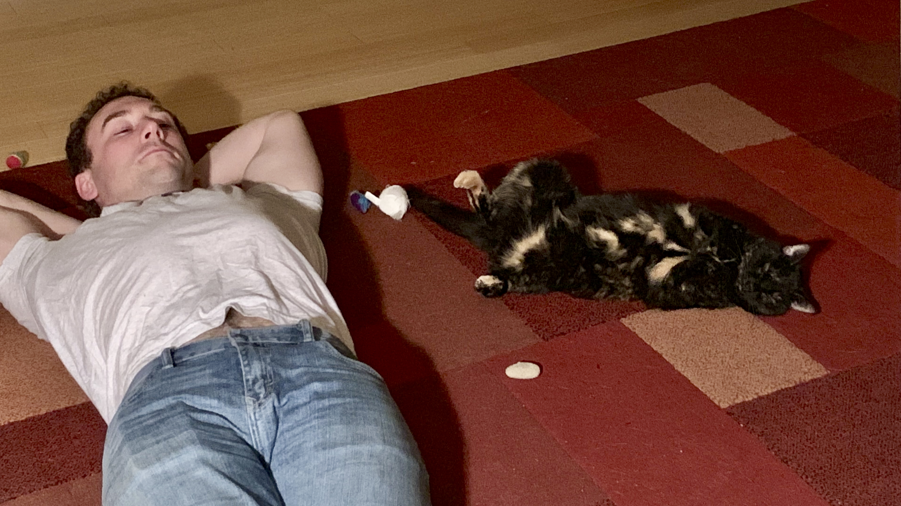
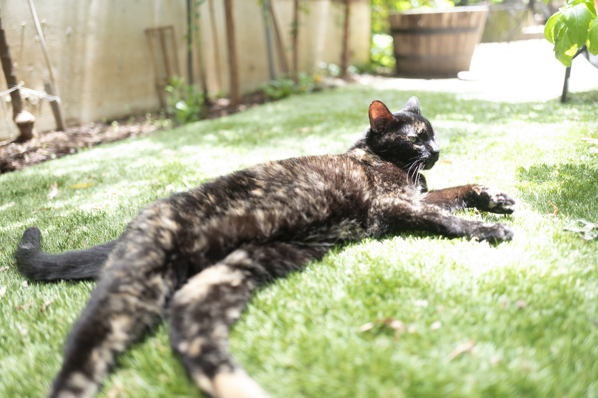
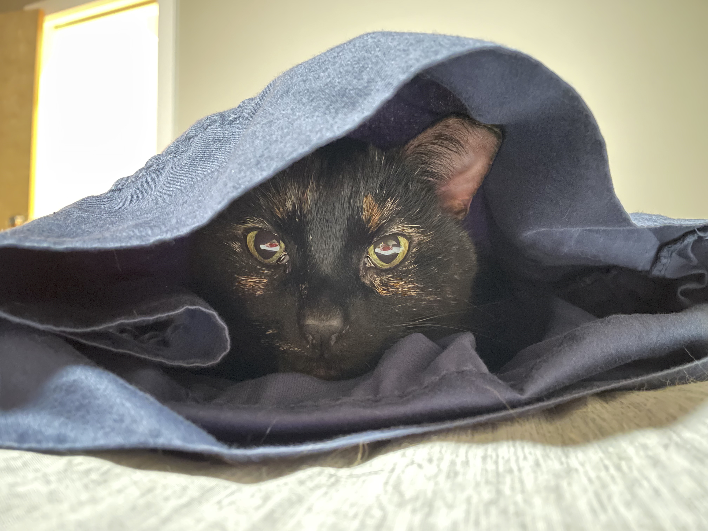
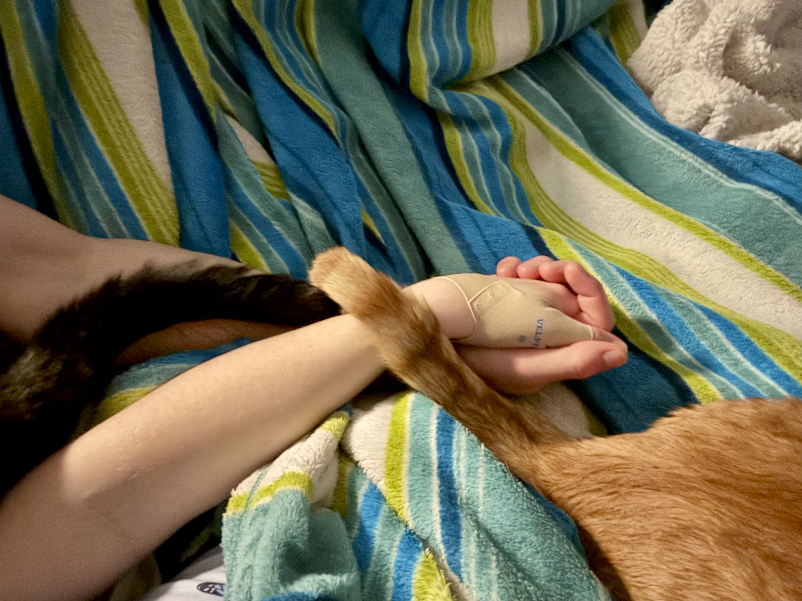

Bant Kram-Beckman

Bant (AKA: Little Miss Thing, Lady Miss Lady, Baby Girl Bant, Squeaker) was our sassy tortie cat of 15 years. With her green-and-yellow eyes and black-and-gold fur coat, she could blend in to the dark of night or appear sprinkled with sun. She had a kink at the tip of her tail, and her coloring made it look like she was wearing 1½ socks on her back paws.

She is survived by her little brother Fox (whom she hated but secretly loved from when he was a kitten), her little sister Aria, and her loving parents/friends/servants Marybeth and Josh.

Bant started life somewhere on the streets or in the fields around Champaign, IL and was rescued by the Humane Society shelter. When Josh and Marybeth visited the shelter for their anniversary and saw this 6 month-old kitten, she chose them by affectionately meowing and licking their hands from inside her cage and then jumping and playing around the room with them once set free. She loved rough play from Josh then and throughout the rest of her life.
At the shelter she was named "Karen" (as she and all her sisters were Mean Girls), but Bant was then named for a little Jedi in a book series who was known for her great agility and friendship.

Throughout life, she would jump anywhere, fetching toys, climbing to the top of full screen doors in attempts to get outside, but she never ran away.
And oh, was she smart. She would only drink running water, as still water was too boring. She licked books on the nightstand to wake us up in the morning.
She was one of the most vocal cats ever, always talking back to people in complaint or approval. Often, she would swat at Josh in disgust, but never used her claws on people; she was too in control for that. She would always come greet people at the door when they arrived home, no matter the hour. Her tail was always held high and in constant motion, until she slept.

Outside, she enjoyed sunning herself in the yard, listlessly chittering at the birds and aggressively hunting the rats.

Inside, she enjoyed lying in Marybeth's lap and having her face rubbed by Josh. She was always ready to give a head bump and would never hesitate to jump down from a perch to play on the floor.


Bant slept in between her parents every night since she was a kitten, and would demand they go to bed so that she could. She followed them through 7 different homes (one with a duck, another with a dog) over the years, and many more life changes.

Bant was healthy and agile until late March 2026, when a vet visit uncovered an aggressive lymphoma and she declined within a week. She passed peacefully at home, lying on her leather jacket, surrounded by her family and favorite toy that she carried with her since that Champaign shelter.
You can carry on her spirit by never accepting less than what you deserve, luxuriating in the sun, and leaning on those you love.
Bant was more partner-in-life than pet, the first to join our family, and our home will forever miss her voice.
With Eternal Love,
Josh, Marybeth, Aria, and Fox
